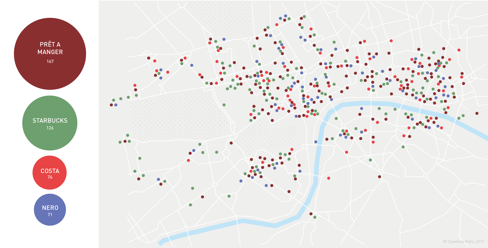
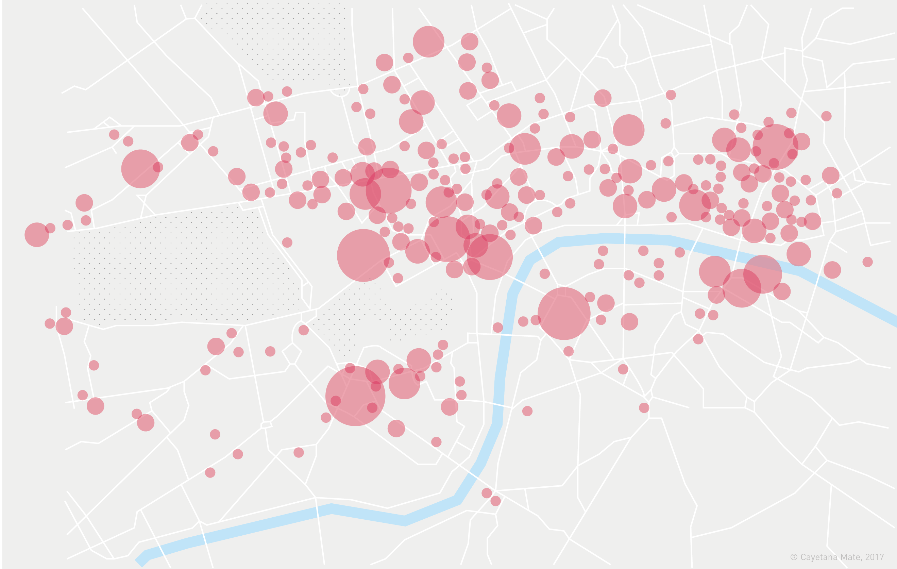
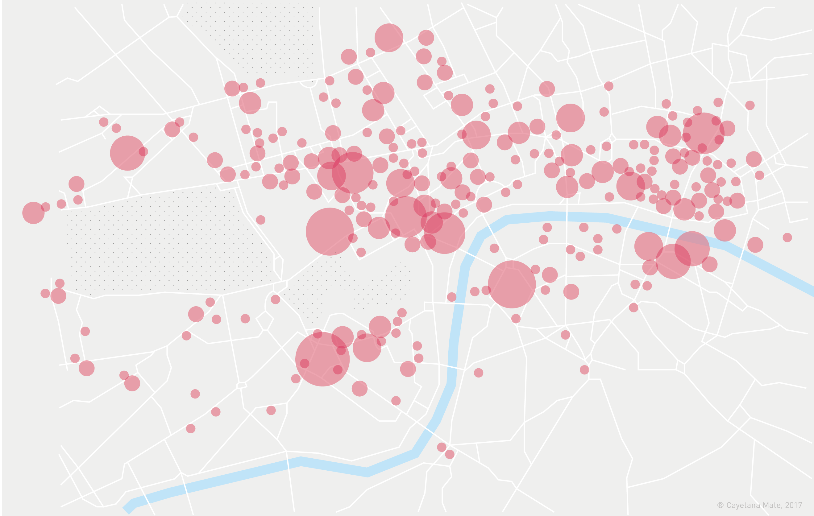

London Coffee
DATA VISUALIZATION
Have you ever realize the crazy amount of Cafes that you can find during a walk of 10 minutes in Central London?
Using Google Maps as tool, I jot down the location of all the Prêt a Manger, Starbucks, Caffè Nero and Costa from Central London in 2017, discovering that many of the mains stations such as Waterloo or Victoria station were easy to find because of the number of cafes they concentrate around them.


